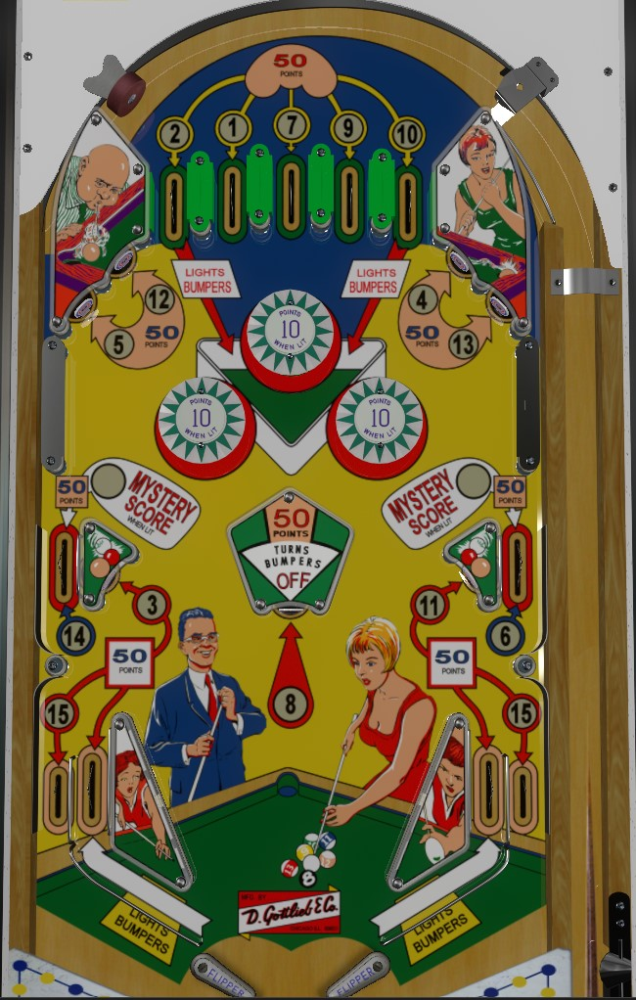

Bank-a-Ball is the replay version. Flipper Pool and Electra-Pool are add-a-ball versions. Differences between the two are discussed throughout the guide.
These games are not to be confused with Target Pool, Pro Pool, Pinball Pool, or any of the countless other billiards-themed pinball games.
On Bank-a-Ball: complete the 1-7 pool balls or 9-15 pool balls to light the 8 ball, then collect the 8 ball too to earn a special and light the upper side lanes for specials. Specials can't be set to award points or extra balls, though, so in a competition, you'll want to light the bumpers with outer top lanes or in lanes and stay in the bumpers as much as possible.
On the add-a-ball versions: extra balls are collected for earning 12, 13, 14, and 15 pool balls, and collecting all 15 resets the sequence to allow for even more pool balls.
The below picture is of Flipper Pool, taken from the VPX by Loserman76.
All standup targets, and all rollover lanes except for the in lanes, correspond with at least one pool ball. Hit a lit target or rollover lane to collect all pool ball(s) associated with that lane. The backbox animation shows which pool balls have been collected.
On Bank-a-Ball: lit rollover lanes and targets score 50 points, while unlit lanes and targets score 5. Note that number 7 and 15 must be collected from the center top lane or you need to drain down out lanes to get them, while 2 and 10 can only be collected from the outermost top lanes with no backup method. Collecting the numbers 1 through 7, or the numbers 9 through 15, lights the center standup target to award the 8 ball and a Special. Collecting the numbers 1 through 8 or 8 through 15 lights the upper right side lane and upper left side lane for Low Special and High Special respectively. The upper side lane specials are lit for the rest of the game.
In the add-a-ball versions: all pool ball targets and lanes score 50 points, whether they are lit or not. There are no lanes or targets that give 2 balls at once. The 2, 7, and 10 balls can only be collected from the top lanes, and the 15 ball can only be collected from either out lane. The 8 ball at the center target is available at any time. 1 extra ball is awarded for collecting 12, 13, 14, and 15 different pool balls. Collecting all 15 balls resets the collected pool balls so that they (and the extra balls) can be collected again. Instead of being lit for Special, the upper side lanes are lit alternately for Mystery Score at all times; the lit lane alternates on any 1 point switch, and the Mystery Score itself is either 100 or 200 points.
Bumpers score 1 point, or 10 points when lit. Either all 3 bumpers are lit or none of them are, with no in between. Bumpers are off at the start of the game. Making either the far left or far right top lane, or making either in lane, lights the bumpers. The center 8 ball target scores 50 points and unlights the bumpers, whether the target itself is lit or not. On Bank-a-Ball, lit pop bumpers are the safest and most efficient route to high scores if free games do not matter to you.
The Bank-a-Ball family has a conventional in/out lane setup. On Bank-a-Ball, the left out lane awards the 7 ball, the right out lane awards the 15 ball, and the in lanes score 5 points in addition to lighting the bumpers. On the add-a-ball versions, both out lanes award the 15 ball, and the in lanes score 50 points in addition to lighting the bumpers.
Be mindful of how the feed from the upper side lanes interacts with the bottom of the table. A ball coming down the upper side lanes quickly can fall to either flipper or the center drain. A ball coming down the upper side lanes slowly can hit the top of the slingshot and go straight to the out lane or bounce to either flipper or the center drain. Since the rail separating the in and out lanes is so much lower than the tops of the slingshots, ideal play involves using nudging to keep the ball away from the in/out lane area entirely rather than simply trying to encourage the ball to go into the in lane.
There is no end of ball bonus. Tilt ends game on Bank-a-Ball; tilt penalty is the ball in play plus one additional ball for the add-a-ball versions. Bank-a-Ball can display scores up to 1,999 points, while the add-a-ball games can display scores up to 9,999 points natively.